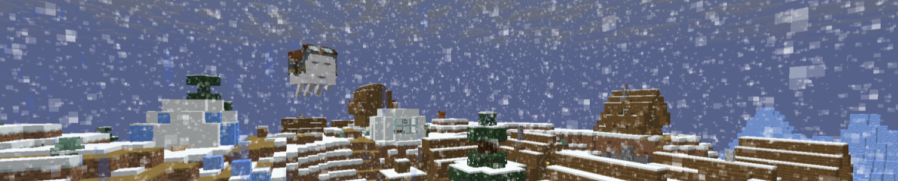

Changelog
Jump to:
Usage Guide /
Beta 1.0.0.0 /
Beta 1.0.1.0 /
Beta 1.0.2.0 /
Beta 1.1.0.0 /
Beta 1.1.1.0 /
Beta 1.1.1.1 /
Beta 1.1.2.0 /
Beta 1.1.3.0
Beta 1.2.0.0 (RC1) /
Release 1.0.0.0 /
Release 1.0.0.1 /
Release 1.0.0.2 /
Release 1.0.1.0 /
Release 1.0.2.0 /
Release 1.0.3.0
January 12th, 2025, b1.0.0.0
- Beta release.
January 13th, 2025, b1.0.1.0 - "All is not Opti-Fine"
MAIN FOCUS: OPTIMIZATION & BLOCK RENDERING
- Optimized all .html, .css, .json, & .jem files
- Changed item textures for Torch, Redstone Torch, & Soul Torch
- Fixed block textures for Redstone Torch
- Made block models use texture $textures/block/bamboo_fence.png instead of $textures/block/oaf/a1.png :
$models/block/bamboo_fence_gate_wall.json
$models/block/bamboo_fence_gate_wall_open.json
$models/block/bamboo_fence_inventory.json
$models/block/bamboo_fence_post.json
$models/block/bamboo_fence_side1.json
$models/block/bamboo_fence_side2.json
- Following entities now use their vanilla texture if the custom .jem file cannot be loaded due to lack of OptiFine or having the option disabled:
Armadillo
Bell
Book
Chicken
Cow
Evoker
Pig
Piglin
Piglin Brute
Zombified Piglin
Pillager
Pufferfish (Small, Medium, & Large)
Pig Saddle
Salmon
Sheep
Sheep Wool
Wandering Trader
Turtle
Vindicator
Witch
- Deleted files:
$textures/block/oaf/_.png
$textures/block/oaf/1.png
$textures/block/oaf/a1.png
$textures/block/oaf/inventory_lever.png
$textures/block/oaf/inventory_tripwirehook.png
$textures/block/oaf/p_dm1.png
$textures/block/oaf/p_dm2.png
$textures/block/oaf/p_w1.png
$textures/block/oaf/p_w2.png
$textures/block/oaf/torches_top.png
- Added/Modified files:
%assets/.mcassetsroot (Pointer)
$textures/item/oaf/lever.png
$textures/item/oaf/redstonetorch.png
$textures/item/oaf/soultorch.png
$textures/item/oaf/torch.png
$textures/item/oaf/tripwirehook.png
January 14th, 2025, b1.0.2.0 - "Animation Nation"
MAIN FOCUS: FIXES & ANIMATED TEXTURES
- Fixed a typo that caused Sheep to have a missing texture
- Moved Chest variant textures to the entity/_oaf directory to fix missing textures
- Removed unnecessary .xcf files
- Reformatted the changelog
- Added provisions for Bedrock Edition Support
- Optimized all .mcmeta files
- Removed unnecessary textures :
$textures/gui/title/minecraft_old.png
$textures/effect/dither.png
- Added/Modified files:
$optifine/cem/trapped_chest.png
$textures/block/fire_0.png
$textures/block/fire_1.png
$textures/sculk_sensor_tendrils_active.png
$textures/sculk_sensor_tendrils_inactive.png
$textures/sculk_vein.png
$textures/seagrass.png
$textures/tall_seagrass_bottom.png
$textures/tall_seagrass_top.png
$textures/block/soul_fire_0.png
$textures/block/soul_fire_1.png
$textures/block/stripped_pale_oak_log.png
$textures/block/stripped_pale_oak_log_top.png
$textures/block/wildflowers.png
$textures/gui/title/mojangstudios.png.mcmeta
January 17th, 2025, b1.1.0.0 - "Wonderful Widgets"
MAIN FOCUS: U.I.
- Added %devnotes.txt
- Changed all versions to a 4-digit number, i.e. "b1.0.0.0"
- Fixed instances of version b1.0.2.0 being incorrectly referred to as "b1.0.2.1" in the changelog.
- %_changelog.html (this) & %_guide.html now use the default Minecraft font.
- Added <div> classes to the changelog allowing jumps using a hash in the URL.
- Added %assets/jump.js as a script to support jumping between <div> classes.
- Added a menu to jump to specific versions in the changelog.
- Fixed texture block/redstone_torch.png
- Lightning Rod now reads correctly from $textures/block/lightning_rod.png instead of the non-existant $textures/block/oaf/a1.png
- Trapped Chest (Single & Double) now render with custom model.
- Standard wolf texture resolution decreased giving it the 8x8 appearance instead of a half-baked monstrosity.
- Added/Modified files:
$textures/block/kelp.png
$textures/block/kelp_plant.png
$textures/item/empty_armor_slot_boots.png
$textures/item/empty_armor_slot_chestplate.png
$textures/item/empty_armor_slot_helmet.png
$textures/item/empty_armor_slot_leggings.png
$textures/item/empty_armor_slot_shield.png
$textures/misc/shadow.png
$textures/gui/stream_indicator.png
$textures/gui/advancements/window.png
$textures/gui/sprites/advancements/box_obtained.png
$textures/gui/sprites/advancements/box_unobtained.png
$textures/gui/sprites/advancements/challenge_frame_obtained.png
$textures/gui/sprites/advancements/challenge_frame_unobtained.png
$textures/gui/sprites/advancements/goal_frame_obtained.png
$textures/gui/sprites/advancements/goal_frame_unobtained.png
$textures/gui/sprites/advancements/tab_above_left.png
$textures/gui/sprites/advancements/tab_above_left_selected.png
$textures/gui/sprites/advancements/tab_above_middle.png
$textures/gui/sprites/advancements/tab_above_middle_selected.png
$textures/gui/sprites/advancements/tab_above_right.png
$textures/gui/sprites/advancements/tab_above_right_selected.png
$textures/gui/sprites/advancements/task_frame_obtained.png
$textures/gui/sprites/advancements/task_frame_unobtained.png
$textures/gui/sprites/advancements/title_box.png
$textures/gui/sprites/backup/changes.png
$textures/gui/sprites/backup/changes_highlighted.png
$textures/gui/sprites/backup/restore.png
$textures/gui/sprites/backup/restore_highlighted.png
$textures/gui/sprites/boss_bar/blue_background.png
$textures/gui/sprites/boss_bar/blue_progress.png
$textures/gui/sprites/boss_bar/green_background.png
$textures/gui/sprites/boss_bar/green_progress.png
$textures/gui/sprites/boss_bar/notched_6_background.png
$textures/gui/sprites/boss_bar/notched_6_progress.png
$textures/gui/sprites/boss_bar/notched_10_background.png
$textures/gui/sprites/boss_bar/notched_10_progress.png
$textures/gui/sprites/boss_bar/notched_12_background.png
$textures/gui/sprites/boss_bar/notched_12_progress.png
$textures/gui/sprites/boss_bar/notched_20_background.png
$textures/gui/sprites/boss_bar/notched_20_progress.png
$textures/gui/sprites/boss_bar/pink_background.png
$textures/gui/sprites/boss_bar/pink_progress.png
$textures/gui/sprites/boss_bar/purple_background.png
$textures/gui/sprites/boss_bar/purple_progress.png
$textures/gui/sprites/boss_bar/red_background.png
$textures/gui/sprites/boss_bar/red_progress.png
$textures/gui/sprites/boss_bar/white_background.png
$textures/gui/sprites/boss_bar/white_progress.png
$textures/gui/sprites/boss_bar/yellow_background.png
$textures/gui/sprites/boss_bar/yellow_progress.png
$textures/gui/sprites/container/creative_inventory/scroller.png
$textures/gui/sprites/container/creative_inventory/scroller_disabled.png
$textures/gui/sprites/container/creative_inventory/tab_bottom_selected_1.png
$textures/gui/sprites/container/creative_inventory/tab_bottom_selected_2.png
$textures/gui/sprites/container/creative_inventory/tab_bottom_selected_3.png
$textures/gui/sprites/container/creative_inventory/tab_bottom_selected_4.png
$textures/gui/sprites/container/creative_inventory/tab_bottom_selected_5.png
$textures/gui/sprites/container/creative_inventory/tab_bottom_selected_6.png
$textures/gui/sprites/container/creative_inventory/tab_bottom_selected_7.png
$textures/gui/sprites/container/creative_inventory/tab_bottom_unselected_1.png
$textures/gui/sprites/container/creative_inventory/tab_bottom_unselected_2.png
$textures/gui/sprites/container/creative_inventory/tab_bottom_unselected_3.png
$textures/gui/sprites/container/creative_inventory/tab_bottom_unselected_4.png
$textures/gui/sprites/container/creative_inventory/tab_bottom_unselected_5.png
$textures/gui/sprites/container/creative_inventory/tab_bottom_unselected_6.png
$textures/gui/sprites/container/creative_inventory/tab_bottom_unselected_7.png
$textures/gui/sprites/container/creative_inventory/tab_top_selected_1.png
$textures/gui/sprites/container/creative_inventory/tab_top_selected_2.png
$textures/gui/sprites/container/creative_inventory/tab_top_selected_3.png
$textures/gui/sprites/container/creative_inventory/tab_top_selected_4.png
$textures/gui/sprites/container/creative_inventory/tab_top_selected_5.png
$textures/gui/sprites/container/creative_inventory/tab_top_selected_6.png
$textures/gui/sprites/container/creative_inventory/tab_top_selected_7.png
$textures/gui/sprites/container/creative_inventory/tab_top_unselected_1.png
$textures/gui/sprites/container/creative_inventory/tab_top_unselected_2.png
$textures/gui/sprites/container/creative_inventory/tab_top_unselected_3.png
$textures/gui/sprites/container/creative_inventory/tab_top_unselected_4.png
$textures/gui/sprites/container/creative_inventory/tab_top_unselected_5.png
$textures/gui/sprites/container/creative_inventory/tab_top_unselected_6.png
$textures/gui/sprites/container/creative_inventory/tab_top_unselected_7.png
$textures/gui/sprites/gamemode_switcher/selected.png
$textures/gui/sprites/gamemode_switcher/slot.png
$textures/gui/sprites/icon/accessibility.png
$textures/gui/sprites/icon/chat_modified.png
$textures/gui/sprites/icon/checkmark.png
$textures/gui/sprites/icon/draft_report.png
$textures/gui/sprites/icon/info.png
$textures/gui/sprites/icon/invite.png
$textures/gui/sprites/icon/language.png
$textures/gui/sprites/icon/link.png
$textures/gui/sprites/icon/link_highlighted.png
$textures/gui/sprites/icon/new_realm.png
$textures/gui/sprites/icon/news.png
$textures/gui/sprites/icon/ping_1.png
$textures/gui/sprites/icon/ping_2.png
$textures/gui/sprites/icon/ping_3.png
$textures/gui/sprites/icon/ping_4.png
$textures/gui/sprites/icon/ping_5.png
$textures/gui/sprites/icon/ping_unknown.png
$textures/gui/sprites/icon/search.png
$textures/gui/sprites/icon/trial_available.png
$textures/gui/sprites/icon/unseen_notification.png
$textures/gui/sprites/icon/video_link.png
$textures/gui/sprites/icon/video_link_highlighted.png
$textures/gui/sprites/notification/1.png
$textures/gui/sprites/notification/2.png
$textures/gui/sprites/notification/3.png
$textures/gui/sprites/notification/4.png
$textures/gui/sprites/notification/5.png
$textures/gui/sprites/notification/more.png
$textures/gui/sprites/pending_invite/accept.png
$textures/gui/sprites/pending_invite/accept_highlighted.png
$textures/gui/sprites/pending_invite/reject.png
$textures/gui/sprites/pending_invite/reject_hightlighted.png
$textures/gui/sprites/player_list/make_operator.png
$textures/gui/sprites/player_list/make_operator_highlighted.png
$textures/gui/sprites/player_list/remove_operator.png
$textures/gui/sprites/player_list/remove_operator_highlighted.png
$textures/gui/sprites/player_list/remove_player.png
$textures/gui/sprites/player_list/remove_player_highlighted.png
$textures/gui/sprites/popup/background.png
$textures/gui/sprites/realm_status/closed.png
$textures/gui/sprites/realm_status/expired.png
$textures/gui/sprites/realm_status/expires_soon.png
$textures/gui/sprites/realm_status/open.png
$textures/gui/sprites/recipe_book/crafting_overlay.png
$textures/gui/sprites/recipe_book/crafting_overlay_disabled.png
$textures/gui/sprites/recipe_book/crafting_overlay_disabled_highlighted.png
$textures/gui/sprites/recipe_book/crafting_overlay_highlighted.png
$textures/gui/sprites/recipe_book/furnace_overlay.png
$textures/gui/sprites/recipe_book/furnace_overlay_disabled.png
$textures/gui/sprites/recipe_book/furnace_overlay_disabled_highlighted.png
$textures/gui/sprites/recipe_book/furnace_overlay_highlighted.png
$textures/gui/sprites/recipe_book/overlay_recipe.png
$textures/gui/sprites/server_list/join.png
$textures/gui/sprites/server_list/join_highlighted.png
$textures/gui/sprites/server_list/move_down.png
$textures/gui/sprites/server_list/move_down_highlighted.png
$textures/gui/sprites/server_list/move_up.png
$textures/gui/sprites/server_list/move_up_highlighted.png
$textures/gui/sprites/server_list/pinging_1.png
$textures/gui/sprites/server_list/pinging_2.png
$textures/gui/sprites/server_list/pinging_3.png
$textures/gui/sprites/server_list/pinging_4.png
$textures/gui/sprites/server_list/pinging_5.png
$textures/gui/sprites/social_interactions/background.png
$textures/gui/sprites/social_interactions/mute_button.png
$textures/gui/sprites/social_interactions/mute_button_highlighted.png
$textures/gui/sprites/social_interactions/report_button.png
$textures/gui/sprites/social_interactions/report_button_disabled.png
$textures/gui/sprites/social_interactions/report_button_highlighted.png
$textures/gui/sprites/social_interactions/unmute_button.png
$textures/gui/sprites/social_interactions/unmute_button_highlighted.png
$textures/gui/sprites/spectator/close.png
$textures/gui/sprites/spectator/scroll_left.png
$textures/gui/sprites/spectator/scroll_right.png
$textures/gui/sprites/spectator/teleport_to_player.png
$textures/gui/sprites/spectator/teleport_to_team.png
$textures/gui/sprites/statistics/block_mined.png
$textures/gui/sprites/statistics/header.png
$textures/gui/sprites/statistics/item_broken.png
$textures/gui/sprites/statistics/item_crafted.png
$textures/gui/sprites/statistics/item_dropped.png
$textures/gui/sprites/statistics/item_picked_up.png
$textures/gui/sprites/statistics/item_used.png
$textures/gui/sprites/statistics/sort_down.png
$textures/gui/sprites/statistics/sort_up.png
$textures/gui/sprites/toast/mouse.png
$textures/gui/sprites/toast/movement_keys.png
$textures/gui/sprites/toast/right_click.png
$textures/gui/sprites/toast/social_interactions.png
$textures/gui/sprites/toast/tree.png
$textures/gui/sprites/toast/tutorial.png
$textures/gui/sprites/toast/wooden_planks.png
$textures/gui/sprites/transferable_list/move_down.png
$textures/gui/sprites/transferable_list/move_down_highlighted.png
$textures/gui/sprites/transferable_list/move_up.png
$textures/gui/sprites/transferable_list/move_up_highlighted.png
$textures/gui/sprites/transferable_list/select.png
$textures/gui/sprites/transferable_list/select_highlighted.png
$textures/gui/sprites/transferable_list/unselect.png
$textures/gui/sprites/transferable_list/unselect_highlighted.png
$textures/gui/sprites/widget/button.png
$textures/gui/sprites/widget/button_disabled.png
$textures/gui/sprites/widget/button_highlighted.png
$textures/gui/sprites/widget/checkbox.png
$textures/gui/sprites/widget/checkbox_highlighted.png
$textures/gui/sprites/widget/checkbox_selected.png
$textures/gui/sprites/widget/checkbox_selected_highlighted.png
$textures/gui/sprites/widget/cross_button.png
$textures/gui/sprites/widget/cross_button_highlighted.png
$textures/gui/sprites/widget/locked_button.png
$textures/gui/sprites/widget/locked_button_disabled.png
$textures/gui/sprites/widget/locked_button_highlighted.png
$textures/gui/sprites/widget/page_backward.png
$textures/gui/sprites/widget/page_backward_highlighted.png
$textures/gui/sprites/widget/page_forward.png
$textures/gui/sprites/widget/page_forward_highlighted.png
$textures/gui/sprites/widget/scroller.png
$textures/gui/sprites/widget/scroller_background.png
$textures/gui/sprites/widget/slider.png
$textures/gui/sprites/widget/slider_handle.png
$textures/gui/sprites/widget/slider_handle_highlighted.png
$textures/gui/sprites/widget/slider_highlighted.png
$textures/gui/sprites/widget/slot_frame.png
$textures/gui/sprites/widget/tab.png
$textures/gui/sprites/widget/tab_highlighted.png
$textures/gui/sprites/widget/tab_selected.png
$textures/gui/sprites/widget/tab_selected_highlighted.png
$textures/gui/sprites/widget/text_field.png
$textures/gui/sprites/widget/text_field_highlighted.png
$textures/gui/sprites/widget/unlocked_button.png
$textures/gui/sprites/widget/unlocked_button_disabled.png
$textures/gui/sprites/widget/unlocked_button_highlighted.png
$textures/gui/sprites/world_list/error.png
$textures/gui/sprites/world_list/error_highlighted.png
$textures/gui/sprites/world_list/join.png
$textures/gui/sprites/world_list/join_highlighted.png
$textures/gui/sprites/world_list/marked_join.png
$textures/gui/sprites/world_list/marked_join_highlighted.png
$textures/gui/sprites/world_list/warning.png
$textures/gui/sprites/world_list/warning_highlighted.png
$textures/gui/sprites/container/creative_inventory/tab_inventory.png
$textures/gui/sprites/container/creative_inventory/tab_item_search.png
$textures/gui/sprites/container/creative_inventory/tab_items.png
January 18th, 2025, b1.1.1.0 - "Blocks, Beagles, 'n' Boats"
MAIN FOCUS: CERTAIN BLOCK MODELS, WOLVES, & BOATS
- Fixed missing date on version b1.1.0.0
- Renamed %guide.html to %_guide.html
- Renamed this file from %changelog.html to %_changelog.html
- Banner now renders in this document.
- Added/Modified files:
$blockstates/water_cauldron.json
$blockstates/lava_cauldron.json
$blockstates/powder_snow_cauldron.json
$models/block/cauldron.json
$models/block/end_rod.json
$models/block/grindstone.json
$models/block/honey_block.json
$models/block/slime_block.json
$models/block/repeater_1tick.json
$models/block/repeater_1tick_locked.json
$models/block/repeater_1tick_on.json
$models/block/repeater_1tick_on_locked.json
$models/block/repeater_2tick.json
$models/block/repeater_2tick_locked.json
$models/block/repeater_2tick_on.json
$models/block/repeater_2tick_on_locked.json
$models/block/repeater_3tick.json
$models/block/repeater_3tick_locked.json
$models/block/repeater_3tick_on.json
$models/block/repeater_3tick_on_locked.json
$models/block/repeater_4tick.json
$models/block/repeater_4tick_locked.json
$models/block/repeater_4tick_on.json
$models/block/repeater_4tick_on_locked.json
$models/block/comparator.json
$models/block/comparator_on.json
$models/block/comparator_subtract.json
$models/block/comparator_on_subtract.json
$models/block/_oaf/stick.json
$models/block/_oaf/fluid1.json
$models/block/_oaf/fluid2.json
$models/block/_oaf/fluid3.json
$models/block/_oaf/water1.json
$models/block/_oaf/water2.json
$models/block/_oaf/water3.json
$models/block/_oaf/snow1.json
$models/block/_oaf/snow2.json
$models/block/_oaf/snow3.json
$models/block/_oaf/lava3.json
$models/item/debug_stick.json
$optifine/cem/creaking.jem
$optifine/cem/raft.jem
$optifine/cem/chest_boat.jem
$optifine/cem/chest_raft.jem
$textures/item/spawn_egg_overlay.png
$textures/block/kelp.png
$textures/block/lightning_rod.png
$textures/block/end_rod.png
$textures/block/grindstone_side.png
$textures/item/_oaf/wand.png
$textures/item/pale_oak_boat.png
$textures/item/pale_oak_chest_boat.png
$textures/item/pale_oak_door.png
$textures/item/pale_oak_hanging_sign.png
$textures/item/pale_oak_sign.png
$textures/entity/wolf/wolf_armor_crackiness_high.png
$textures/entity/wolf/wolf_armor_crackiness_low.png
$textures/entity/wolf/wolf_armor_crackiness_medium.png
$textures/entity/wolf/wolf_ashen.png
$textures/entity/wolf/wolf_ashen_angry.png
$textures/entity/wolf/wolf_ashen_tame.png
$textures/entity/wolf/wolf_black.png
$textures/entity/wolf/wolf_black_angry.png
$textures/entity/wolf/wolf_black_tame.png
$textures/entity/wolf/wolf_chestnut.png
$textures/entity/wolf/wolf_chestnut_angry.png
$textures/entity/wolf/wolf_chestnut_tame.png
$textures/entity/wolf/wolf_collar.png
$textures/entity/wolf/wolf_rusty.png
$textures/entity/wolf/wolf_rusty_angry.png
$textures/entity/wolf/wolf_rusty_tame.png
$textures/entity/wolf/wolf_snowy.png
$textures/entity/wolf/wolf_snowy_angry.png
$textures/entity/wolf/wolf_snowy_tame.png
$textures/entity/wolf/wolf_spotted.png
$textures/entity/wolf/wolf_spotted_angry.png
$textures/entity/wolf/wolf_spotted_tame.png
$textures/entity/wolf/wolf_striped.png
$textures/entity/wolf/wolf_striped_angry.png
$textures/entity/wolf/wolf_striped_tame.png
$textures/entity/wolf/wolf_woods.png
$textures/entity/wolf/wolf_woods_angry.png
$textures/entity/wolf/wolf_woods_tame.png
$textures/entity/creaking/creaking.png
$textures/entity/creaking/creaking_eyes.png
$textures/entity/boat/acacia.png
$textures/entity/boat/bamboo.png
$textures/entity/boat/birch.png
$textures/entity/boat/cherry.png
$textures/entity/boat/dark_oak.png
$textures/entity/boat/jungle.png
$textures/entity/boat/mangrove.png
$textures/entity/boat/pale_oak.png
$textures/entity/boat/spruce.png
$textures/entity/chest_boat/acacia.png
$textures/entity/chest_boat/bamboo.png
$textures/entity/chest_boat/birch.png
$textures/entity/chest_boat/cherry.png
$textures/entity/chest_boat/dark_oak.png
$textures/entity/chest_boat/jungle.png
$textures/entity/chest_boat/mangrove.png
$textures/entity/chest_boat/oak.png
$textures/entity/chest_boat/pale_oak.png
$textures/entity/chest_boat/spruce.png
- Removed Unnecessary Files:
$textures/block/grindstone_round.png
$textures/block/grindstone_pivot.png
January 18th, 2025, b1.1.1.1 - "Blocks, Beagles, 'n' Boats" (Hotfix 1)
- Renamed %asset to %assets to make the pack work again.
January 24th, 2025, b1.1.2.0 - "No47"
- Fixed z-fighting on turtles.
- Modified the chicken model to make the wings not visually seperate from the body when flapping.
- Items now have the proper break particles instead of missing texture.
- Player Heads now render with lower resolution if using OptiFine.
- Fence Gates attached to walls no longer cull visable faces when open.
- Shield banners textures.
- Silverfish, Dolphin, Cod, & Decorated Pot modeled and textured.
- Reformatted the changelog.
- Added/Modified files:
$models/block/bamboo_fence_gate_wall_open.json
$models/block/template_fence_gate_wall_open.json
$textures/entity/shield/base.png
$textures/entity/shield/border.png
$textures/entity/shield/bricks.png
$textures/entity/shield/circle.png
$textures/entity/shield/creeper.png
$textures/entity/shield/cross.png
$textures/entity/shield/curly_border.png
$textures/entity/shield/diagonal_left.png
$textures/entity/shield/diagonal_right.png
$textures/entity/shield/diagonal_up_left.png
$textures/entity/shield/diagonal_up_right.png
$textures/entity/shield/flower.png
$textures/entity/shield/globe.png
$textures/entity/shield/gradient.png
$textures/entity/shield/gradient_up.png
$textures/entity/shield/half_horizontal.png
$textures/entity/shield/half_horizontal_bottom.png
$textures/entity/shield/half_vertical.png
$textures/entity/shield/half_vertical_right.png
$textures/entity/shield/mojang.png
$textures/entity/shield/piglin.png
$textures/entity/shield/rhombus.png
$textures/entity/shield/skull.png
$textures/entity/shield/small_stripes.png
$textures/entity/shield/square_bottom_left.png
$textures/entity/shield/square_bottom_right.png
$textures/entity/shield/square_top_left.png
$textures/entity/shield/square_top_right.png
$textures/entity/shield/straight_cross.png
$textures/entity/shield/stripe_bottom.png
$textures/entity/shield/stripe_center.png
$textures/entity/shield/stripe_downleft.png
$textures/entity/shield/stripe_downright.png
$textures/entity/shield/stripe_left.png
$textures/entity/shield/stripe_middle.png
$textures/entity/shield/stripe_right.png
$textures/entity/shield/stripe_top.png
$textures/entity/shield/triangle_bottom.png
$textures/entity/shield/triangle_top.png
$textures/entity/shield/triangles_bottom.png
$textures/entity/shield/triangles_top.png
$textures/entity/villager/profession/farmer.png
$textures/entity/villager/profession/shepherd.png
$optifine/cem/chicken.jem
$optifine/cem/chicken.png
$optifine/cem/silverfish.jem
$optifine/cem/silverfish.png
$optifine/cem/dolphin.jem
$optifine/cem/dolphin.png
$optifine/cem/cod.jem
$optifine/cem/cod.png
$optifine/cem/villager.jem
$optifine/cem/decorated_pot.jem
$textures/entity/decorated_pot/decorated_pot_base.png
$textures/entity/decorated_pot/decorated_pot_side.png
$textures/entity/decorated_pot/angler_pottery_pattern.png
$textures/entity/decorated_pot/archer_pottery_pattern.png
$textures/entity/decorated_pot/arms_up_pottery_pattern.png
$textures/entity/decorated_pot/blade_pottery_pattern.png
$textures/entity/decorated_pot/brewer_pottery_pattern.png
$textures/entity/decorated_pot/burn_pottery_pattern.png
$textures/entity/decorated_pot/danger_pottery_pattern.png
$textures/entity/decorated_pot/explorer_pottery_pattern.png
$textures/entity/decorated_pot/flow_pottery_pattern.png
$textures/entity/decorated_pot/friend_pottery_pattern.png
$textures/entity/decorated_pot/guster_pottery_pattern.png
$textures/entity/decorated_pot/heart_pottery_pattern.png
$textures/entity/decorated_pot/heartbreak_pottery_pattern.png
$textures/entity/decorated_pot/howl_pottery_pattern.png
$textures/entity/decorated_pot/miner_pottery_pattern.png
$textures/entity/decorated_pot/mourner_pottery_pattern.png
$textures/entity/decorated_pot/plenty_pottery_pattern.png
$textures/entity/decorated_pot/prize_pottery_pattern.png
$textures/entity/decorated_pot/scrape_pottery_pattern.png
$textures/entity/decorated_pot/sheaf_pottery_pattern.png
$textures/entity/decorated_pot/shelter_pottery_pattern.png
$textures/entity/decorated_pot/skull_pottery_pattern.png
$textures/entity/decorated_pot/snort_pottery_pattern.png
January 28th, 2025, b1.1.3.0
- Added menu panorama.
- Updated characters:
&aƒ£ªº¬«»░▒▓│┤╡╢╖╕╣║╗╝╜╛┐└┴┬├─
┼╞╟╚╔╩╦╠═╬╧╨╤╥╙╘╒╓╫╪┘┌█▄▌▐▀∅∈≡
±≥≤⌠⌡÷≈°∙√ⁿ²■ÀÁÂÃÄÅÆÇÈÉÊËÌÍÎÏÐ
ÑÒÓÔÕÖÙÚÛÜÝàáâãäåæçìíîïñòóôõöù
úûüýÿĀāĂ㥹Ćć��ĊċČčĎďÐð����ĖėĘ
ęĚěÊê&⅒
- Skinned Player Heads now render the top left pixel per 4 pixel group on each face to give them the appearance of being half resolution.
- Modeled and textured Camel & Ender Dragon.
- Textured Steve.
- Changelog now links to usage guide properly.
- Usage guide now links to the credits.
- Usage guide, Credits, & Changelog all now have an icon for the browser.
- Added/Modified files:
%_credits.html
%assets/jump.js
%assets/siteicon.ico
%assets/siteicon32x.ico
$head_test_pattern.png
$models/clock.json
$optifine/cem/camel.jem
$optifine/cem/camel.png
$optifine/cem/dragon.jem
$optifine/cem/head_player.jem
$textures/entity/player/slim/steve.png
$textures/entity/player/wide/steve.png
$textures/entity/enderdragon/dragon.png
$textures/entity/enderdragon/dragon_exploding.png
$textures/entity/enderdragon/dragon_eyes.png
$textures/font/accented.png
$textures/font/ascii.png
$textures/gui/title/background/panorama_0.png
$textures/gui/title/background/panorama_1.png
$textures/gui/title/background/panorama_2.png
$textures/gui/title/background/panorama_3.png
$textures/gui/title/background/panorama_4.png
$textures/gui/title/background/panorama_5.png
$textures/item/clock_00.png
$textures/item/clock_02.png
$textures/item/clock_04.png
$textures/item/clock_06.png
$textures/item/clock_08.png
$textures/item/clock_10.png
$textures/item/clock_12.png
$textures/item/clock_14.png
$textures/item/clock_16.png
$textures/item/clock_18.png
$textures/item/clock_20.png
$textures/item/clock_22.png
$textures/item/clock_24.png
$textures/item/clock_26.png
$textures/item/clock_28.png
$textures/item/clock_30.png
$textures/item/clock_32.png
$textures/item/clock_34.png
$textures/item/clock_36.png
$textures/item/clock_38.png
$textures/item/clock_40.png
$textures/item/clock_42.png
$textures/item/clock_44.png
$textures/item/clock_46.png
$textures/item/clock_48.png
$textures/item/clock_50.png
$textures/item/clock_52.png
$textures/item/clock_54.png
$textures/item/clock_56.png
$textures/item/clock_58.png
$textures/item/clock_60.png
$textures/item/clock_62.png
March 21st, 2025, b1.2.0.0-rc1
- Added old version support. (1.4-)
- Modeled & textured:
Bat
Lever
Tripwire Hook
Banner
Ender Dragon Head
Arrow
Tipped Arrow
Spectral Arrow
Wind Charge
Tadpole
Flower Pot
Goat
Fox
Shulker
Shulker Bullet
Leaf Litter
Wildflowers
New Spawn Eggs (25w08a+)
Evoker Fangs
Illusioner
Frogs
Cats
Parrots
Armor Stand
Vex
Allay
Strider
Phantom
Tropical Fish
Trident
Axolotl
Armor Trims
Standard Galactic Alphabet (SGA) Font
- Textured compass.
- Fixed z-fighting on chicken.
- Fixed artifacting on entity shadows.
- Fixed misaligned pushing surfaces on the oars of the bamboo chest raft.
- Fixed z-fighting on spawn eggs.
- Removed Files:
$optifine/cem/armadillo.png
$optifine/cem/bambooraft.png
$optifine/cem/bell.png
$optifine/cem/book.png
$optifine/cem/chest.png
$optifine/cem/chicken.png
$optifine/cem/cod.png
$optifine/cem/cow.png
$optifine/cem/dolphin.png
$optifine/cem/enderchest.png
$optifine/cem/evoker.png
$optifine/cem/head_player.png
$optifine/cem/largechest1.png
$optifine/cem/largechest2.png
$optifine/cem/largetrappedchest1.png
$optifine/cem/largetrappedchest2.png
$optifine/cem/piglin.png
$optifine/cem/piglinbrute.png
$optifine/cem/piglinzombie.png
$optifine/cem/pillager.png
$optifine/cem/pufferfish1.png
$optifine/cem/pufferfish2.png
$optifine/cem/saddle.png
$optifine/cem/salmon.png
$optifine/cem/sheep.png
$optifine/cem/shulker.png
$optifine/cem/shulker_bullet.png
$optifine/cem/silverfish.png
$optifine/cem/trader.png
$optifine/cem/trappedchest.png
$optifine/cem/turtle.png
$optifine/cem/vindicator.png
$optifine/cem/witch.png
$textures/block/cocoa_stage0.png
$textures/block/cocoa_stage1.png
$textures/block/cocoa_stage2.png
$textures/block/command_block.png
$textures/entity/bat.png
$textures/entity/endermite.png
$textures/item/clock_overlay.png
$textures/misc/white.png
- Added/Modified files:
%dn.bin
%particles.png
%terrain.png
%achievement/bg.png
%armor/chain_1.png
%armor/chain_2.png
%armor/cloth_1.png
%armor/cloth_1_b.png
%armor/cloth_2.png
%armor/cloth_2_b.png
%armor/diamond_1.png
%armor/diamond_2.png
%armor/gold_1.png
%armor/gold_2.png
%armor/iron_1.png
%armor/iron_2.png
%armor/power.png
%armor/witherarmor.png
%art/kz.png
%assets/guide.css
%environment/rain.png
%environment/snow.png
%gui/alchemy.png
%gui/allitems.png
%gui/background.png
%gui/beacon.png
%gui/book.png
%gui/container.png
%gui/crafting.png
%gui/crash_logo.png
%gui/demo_bg.png
%gui/enchant.png
%gui/furnace.png
%gui/gui.png
%gui/icons.png
%gui/inventory.png
%gui/items.png
%gui/particles.png
%gui/repair.png
%gui/slot.png
%gui/trading.png
%gui/trap.png
%gui/unknown_pack.png
%gui/creative_inv/list_items.png
%gui/creative_inv/search.png
%gui/creative_inv/survival_inv.png
%item/arrows.png
%item/boat.png
%item/book.png
%item/cart.png
%item/chest.png
%item/enderchest.png
%item/largechest.png
%item/largexmaschest.png
%item/sign.png
%item/xmaschest.png
%item/xporb.png
%misc/beacon.png
%misc/beam.png
%misc/dial.png
%misc/explosion.png
%misc/footprint.png
%misc/glint.png
%misc/mapbg.png
%misc/mapicons.png
%misc/particlefield.png
%misc/pumpkinblur.png
%misc/shadow.png
%misc/tunnel.png
%misc/vignette.png
%misc/water.png
%mob/cavespider.png
%mob/char.png
%mob/cow.png
%mob/creeper.png
%mob/enderman.png
%mob/enderman_eyes.png
%mob/fire.png
%mob/ghast.png
%mob/ghast_fire.png
%mob/lava.png
%mob/pig.png
%mob/pigman.png
%mob/pigzombie.png
%mob/redcow.png
%mob/saddle.png
%mob/sheep.png
%mob/sheep_fur.png
%mob/skeleton.png
%mob/skeleton_wither.png
%mob/slime.png
%mob/snowman.png
%mob/spider.png
%mob/spider_eyes.png
%mob/squid.png
%mob/zombie.png
%mob/zombie_villager.png
%mob/enderdragon/beam.png
%mob/enderdragon/crystal.png
%mob/enderdragon/ender.png
%mob/enderdragon/ender_eyes.png
%mob/enderdragon/shuffle.png
%terrain/moon.png
%terrain/moon_phases.png
%terrain/sun.png
%title/mclogo.png
%title/mojang.png
%title/bg/panorama0.png
%title/bg/panorama1.png
%title/bg/panorama2.png
%title/bg/panorama3.png
%title/bg/panorama4.png
%title/bg/panorama5.png
$models/block/cocoa_stage0.json
$models/block/cocoa_stage1.json
$models/block/cocoa_stage2.json
$models/block/flower_pot.json
$models/block/flower_pot_cross.json
$models/block/lever.json
$models/block/tripwire_hook.json
$models/block/tripwire_hook_attached.json
$models/block/tripwire_hook_attached_on.json
$models/item/clock.json
$optifine/cem/_atlas01.png
$optifine/cem/_atlas02.png
$optifine/cem/_atlas03.png
$optifine/cem/_atlas04.png
$optifine/cem/_atlas05.png
$optifine/cem/allay.jem
$optifine/cem/armadillo.jem
$optifine/cem/armor_stand.jem
$optifine/cem/axolotl.jem
$optifine/cem/banner.jem
$optifine/cem/bat.jem
$optifine/cem/bell.jem
$optifine/cem/book.jem
$optifine/cem/cat.jem
$optifine/cem/cat_collar.jem
$optifine/cem/chest.jem
$optifine/cem/chest_left.jem
$optifine/cem/chest_raft.jem
$optifine/cem/chest_right.jem
$optifine/cem/chicken.jem
$optifine/cem/cod.jem
$optifine/cem/cow.jem
$optifine/cem/dolphin.jem
$optifine/cem/donkey.jem
$optifine/cem/ender_chest.jem
$optifine/cem/evoker_fangs.jem
$optifine/cem/fox.jem
$optifine/cem/goat.jem
$optifine/cem/head_dragon.jem
$optifine/cem/head_piglin.jem
$optifine/cem/hoglin.jem
$optifine/cem/horse.jem
$optifine/cem/horse_armor.jem
$optifine/cem/illusioner.jem
$optifine/cem/magma_cube.jem
$optifine/cem/mule.jem
$optifine/cem/panda.jem
$optifine/cem/parrot.jem
$optifine/cem/phantom.jem
$optifine/cem/pig_saddle.jem
$optifine/cem/piglin.jem
$optifine/cem/piglin_brute.jem
$optifine/cem/puffer_fish_big.jem
$optifine/cem/puffer_fish_medium.jem
$optifine/cem/puffer_fish_small.jem
$optifine/cem/ravager.jem
$optifine/cem/ravager.png
$optifine/cem/salmon.jem
$optifine/cem/sheep.jem
$optifine/cem/sheep_wool.jem
$optifine/cem/silverfish.jem
$optifine/cem/skeleton_horse.jem
$optifine/cem/slime.jem
$optifine/cem/slime_outer.jem
$optifine/cem/sniffer.jem
$optifine/cem/sniffer.png
$optifine/cem/strider.jem
$optifine/cem/tadpole.jem
$optifine/cem/trapped_chest.jem
$optifine/cem/trapped_chest_left.jem
$optifine/cem/trapped_chest_right.jem
$optifine/cem/trident.jem
$optifine/cem/tropical_fish_a.jem
$optifine/cem/tropical_fish_b.jem
$optifine/cem/tropical_fish_pattern_a.jem
$optifine/cem/tropical_fish_pattern_b.jem
$optifine/cem/turtle.jem
$optifine/cem/vex.jem
$optifine/cem/vindicator.jem
$optifine/cem/wandering_trader.jem
$optifine/cem/witch.jem
$optifine/cem/zoglin.jem
$optifine/cem/zombie_horse.jem
$optifine/cem/zombified_piglin.jem
$textures/block/firefly_bush.png
$textures/block/firefly_bush_emissive.png
$textures/block/firefly_bush_emissive.png.mcmeta
$textures/block/leaf_litter.png
$textures/block/lever.png
$textures/block/lever2.png
$textures/block/tripwire_hook.png
$textures/block/wildflowers.png
$textures/block/wildflowers_stem.png
$textures/block/_oaf/cocoa.png
$textures/entity/banner_base.png
$textures/entity/elytra.png
$textures/entity/phantom.png
$textures/entity/phantom_eyes.png
$textures/entity/axolotl/atolotl_blue.png
$textures/entity/axolotl/atolotl_cyan.png
$textures/entity/axolotl/atolotl_gold.png
$textures/entity/axolotl/atolotl_lucy.png
$textures/entity/axolotl/atolotl_wild.png
$textures/entity/banner/base.png
$textures/entity/banner/border.png
$textures/entity/banner/bricks.png
$textures/entity/banner/circle.png
$textures/entity/banner/creeper.png
$textures/entity/banner/cross.png
$textures/entity/banner/curly_border.png
$textures/entity/banner/diagonal_left.png
$textures/entity/banner/diagonal_right.png
$textures/entity/banner/diagonal_up_left.png
$textures/entity/banner/diagonal_up_right.png
$textures/entity/banner/flow.png
$textures/entity/banner/flower.png
$textures/entity/banner/globe.png
$textures/entity/banner/gradient.png
$textures/entity/banner/gradient_up.png
$textures/entity/banner/guster.png
$textures/entity/banner/half_horizontal.png
$textures/entity/banner/half_horizontal_bottom.png
$textures/entity/banner/half_vertical.png
$textures/entity/banner/half_vertical_left.png
$textures/entity/banner/half_vertical_right.png
$textures/entity/banner/mojang.png
$textures/entity/banner/piglin.png
$textures/entity/banner/rhombus.png
$textures/entity/banner/skull.png
$textures/entity/banner/small_stipes.png
$textures/entity/banner/snout.png
$textures/entity/banner/square_bottom_left.png
$textures/entity/banner/square_bottom_right.png
$textures/entity/banner/square_top_left.png
$textures/entity/banner/square_top_right.png
$textures/entity/banner/straight_cross.png
$textures/entity/banner/stripe_bottom.png
$textures/entity/banner/stripe_center.png
$textures/entity/banner/stripe_downleft.png
$textures/entity/banner/stripe_downright.png
$textures/entity/banner/stripe_left.png
$textures/entity/banner/stripe_middle.png
$textures/entity/banner/stripe_right.png
$textures/entity/banner/stripe_top.png
$textures/entity/banner/triangle_bottom.png
$textures/entity/banner/triangle_top.png
$textures/entity/banner/triangles_bottom.png
$textures/entity/banner/triangles_top.png
$textures/entity/cat/all_black.png
$textures/entity/cat/black.png
$textures/entity/cat/british_shorthair.png
$textures/entity/cat/calico.png
$textures/entity/cat/cat_collar.png
$textures/entity/cat/jellie.png
$textures/entity/cat/ocelot.png
$textures/entity/cat/persian.png
$textures/entity/cat/ragdoll.png
$textures/entity/cat/red.png
$textures/entity/cat/siamese.png
$textures/entity/cat/tabby.png
$textures/entity/cat/white.png
$textures/entity/equipment/horse_body/diamond.png
$textures/entity/equipment/horse_body/gold.png
$textures/entity/equipment/horse_body/iron.png
$textures/entity/equipment/horse_body/leather.png
$textures/entity/equipment/wings/elytra.png
$textures/entity/fish/tropical_a.png
$textures/entity/fish/tropical_a_pattern_1.png
$textures/entity/fish/tropical_a_pattern_2.png
$textures/entity/fish/tropical_a_pattern_3.png
$textures/entity/fish/tropical_a_pattern_4.png
$textures/entity/fish/tropical_a_pattern_5.png
$textures/entity/fish/tropical_a_pattern_6.png
$textures/entity/fish/tropical_b.png
$textures/entity/fish/tropical_b_pattern_1.png
$textures/entity/fish/tropical_b_pattern_2.png
$textures/entity/fish/tropical_b_pattern_3.png
$textures/entity/fish/tropical_b_pattern_4.png
$textures/entity/fish/tropical_b_pattern_5.png
$textures/entity/fish/tropical_b_pattern_6.png
$textures/entity/fox/fox.png
$textures/entity/fox/fox_sleep.png
$textures/entity/fox/snow_fox.png
$textures/entity/fox/snow_fox_sleep.png
$textures/entity/frog/cold_frog.png
$textures/entity/frog/temperate_frog.png
$textures/entity/frog/warm_frog.png
$textures/entity/horse/donkey.png
$textures/entity/horse/horse_black.png
$textures/entity/horse/horse_brown.png
$textures/entity/horse/horse_chestnut.png
$textures/entity/horse/horse_creamy.png
$textures/entity/horse/horse_darkbrown.png
$textures/entity/horse/horse_gray.png
$textures/entity/horse/horse_markings_blackdots.png
$textures/entity/horse/horse_markings_white.png
$textures/entity/horse/horse_markings_whitedots.png
$textures/entity/horse/horse_markings_whitefield.png
$textures/entity/horse/horse_skeleton.png
$textures/entity/horse/horse_white.png
$textures/entity/horse/horse_zombie.png
$textures/entity/horse/mule.png
$textures/entity/horse/armor/horse_armor_diamond.png
$textures/entity/horse/armor/horse_armor_gold.png
$textures/entity/horse/armor/horse_armor_iron.png
$textures/entity/horse/armor/horse_armor_leather.png
$textures/entity/illager/vex.png
$textures/entity/illager/vex_charging.png
$textures/entity/panda/aggresive_panda.png
$textures/entity/panda/brown_panda.png
$textures/entity/panda/lazy_panda.png
$textures/entity/panda/panda.png
$textures/entity/panda/playful_panda.png
$textures/entity/panda/weak_panda.png
$textures/entity/panda/worried_panda.png
$textures/entity/parrot/parrot_blue.png
$textures/entity/parrot/parrot_green.png
$textures/entity/parrot/parrot_grey.png
$textures/entity/parrot/parrot_red_blue.png
$textures/entity/parrot/parrot_yellow_blue.png
$textures/entity/projectiles/arrow.png
$textures/entity/projectiles/spectral_arrow.png
$textures/entity/projectiles/tipped_arrow.png
$textures/entity/projectiles/wind_charge.png
$textures/entity/shulker/shulker.png
$textures/entity/shulker/shulker_black.png
$textures/entity/shulker/shulker_blue.png
$textures/entity/shulker/shulker_brown.png
$textures/entity/shulker/shulker_cyan.png
$textures/entity/shulker/shulker_gray.png
$textures/entity/shulker/shulker_green.png
$textures/entity/shulker/shulker_light_blue.png
$textures/entity/shulker/shulker_light_gray.png
$textures/entity/shulker/shulker_lime.png
$textures/entity/shulker/shulker_magenta.png
$textures/entity/shulker/shulker_orange.png
$textures/entity/shulker/shulker_pink.png
$textures/entity/shulker/shulker_purple.png
$textures/entity/shulker/shulker_red.png
$textures/entity/shulker/shulker_white.png
$textures/entity/shulker/shulker_yellow.png
$textures/entity/strider/strider.png
$textures/entity/strider/strider_cold.png
$textures/entity/strider/strider_saddle.png
$textures/entity/warden/warden.png
$textures/entity/warden/warden_bioluminescent_layer.png
$textures/entity/warden/warden_heart.png
$textures/entity/warden/warden_pulsating_spots_1.png
$textures/entity/warden/warden_pulsating_spots_2.png
$textures/environment/rain.png
$textures/environment/snow.png
$textures/font/ascii_sga.png
$textures/font/asciiillager.png
$textures/gui/container/stats_icons.png
$textures/item/allay_spawn_egg.png
$textures/item/armadillo_spawn_egg.png
$textures/item/axolotl_spawn_egg.png
$textures/item/bat_spawn_egg.png
$textures/item/bee_spawn_egg.png
$textures/item/blaze_spawn_egg.png
$textures/item/bogged_spawn_egg.png
$textures/item/breeze_spawn_egg.png
$textures/item/camel_spawn_egg.png
$textures/item/cat_spawn_egg.png
$textures/item/cave_spider_spawn_egg.png
$textures/item/chicken_spawn_egg.png
$textures/item/cod_spawn_egg.png
$textures/item/compass_00.png
$textures/item/compass_01.png
$textures/item/compass_02.png
$textures/item/compass_03.png
$textures/item/compass_04.png
$textures/item/compass_05.png
$textures/item/compass_06.png
$textures/item/compass_07.png
$textures/item/compass_08.png
$textures/item/compass_09.png
$textures/item/compass_10.png
$textures/item/compass_11.png
$textures/item/compass_12.png
$textures/item/compass_13.png
$textures/item/compass_14.png
$textures/item/compass_15.png
$textures/item/compass_16.png
$textures/item/compass_17.png
$textures/item/compass_18.png
$textures/item/compass_19.png
$textures/item/compass_20.png
$textures/item/compass_21.png
$textures/item/compass_22.png
$textures/item/compass_23.png
$textures/item/compass_24.png
$textures/item/compass_25.png
$textures/item/compass_26.png
$textures/item/compass_27.png
$textures/item/compass_28.png
$textures/item/compass_29.png
$textures/item/compass_30.png
$textures/item/compass_31.png
$textures/item/cow_spawn_egg.png
$textures/item/creaking_spawn_egg.png
$textures/item/creeper_spawn_egg.png
$textures/item/dolphin_spawn_egg.png
$textures/item/donkey_spawn_egg.png
$textures/item/drowned_spawn_egg.png
$textures/item/elder_guardian_spawn_egg.png
$textures/item/ender_dragon_spawn_egg.png
$textures/item/enderman_spawn_egg.png
$textures/item/endermite_spawn_egg.png
$textures/item/evoker_spawn_egg.png
$textures/item/fox_spawn_egg.png
$textures/item/ghast_spawn_egg.png
$textures/item/glow_squid_spawn_egg.png
$textures/item/goat_spawn_egg.png
$textures/item/guardian_spawn_egg.png
$textures/item/hoglin_spawn_egg.png
$textures/item/horse_spawn_egg.png
$textures/item/husk_spawn_egg.png
$textures/item/iron_golem_spawn_egg.png
$textures/item/leaf_litter.png
$textures/item/llama_spawn_egg.png
$textures/item/magma_cube_spawn_egg.png
$textures/item/mooshroom_spawn_egg.png
$textures/item/mule_spawn_egg.png
$textures/item/ocelot_spawn_egg.png
$textures/item/panda_spawn_egg.png
$textures/item/parrot_spawn_egg.png
$textures/item/phantom_spawn_egg.png
$textures/item/pig_spawn_egg.png
$textures/item/piglin_brute_spawn_egg.png
$textures/item/piglin_spawn_egg.png
$textures/item/pillager_spawn_egg.png
$textures/item/polar_bear_spawn_egg.png
$textures/item/pufferfish_spawn_egg.png
$textures/item/rabbit_spawn_egg.png
$textures/item/ravager_spawn_egg.png
$textures/item/salmon_spawn_egg.png
$textures/item/sheep_spawn_egg.png
$textures/item/shulker_spawn_egg.png
$textures/item/silverfish_spawn_egg.png
$textures/item/skeleton_horse_spawn_egg.png
$textures/item/skeleton_spawn_egg.png
$textures/item/slime_spawn_egg.png
$textures/item/sniffer_spawn_egg.png
$textures/item/snow_golem_spawn_egg.png
$textures/item/spawn_egg.png
$textures/item/spider_spawn_egg.png
$textures/item/squid_spawn_egg.png
$textures/item/stray_spawn_egg.png
$textures/item/strider_spawn_egg.png
$textures/item/tadpole_spawn_egg.png
$textures/item/trader_llama_spawn_egg.png
$textures/item/tropical_fish_spawn_egg.png
$textures/item/turtle_spawn_egg.png
$textures/item/vex_spawn_egg.png
$textures/item/villager_spawn_egg.png
$textures/item/vindicator_spawn_egg.png
$textures/item/wandering_trader_spawn_egg.png
$textures/item/warden_spawn_egg.png
$textures/item/wildflowers.png
$textures/item/witch_spawn_egg.png
$textures/item/wither_skeleton_spawn_egg.png
$textures/item/wither_spawn_egg.png
$textures/item/wolf_spawn_egg.png
$textures/item/zoglin_spawn_egg.png
$textures/item/zombie_horse_spawn_egg.png
$textures/item/zombie_spawn_egg.png
$textures/item/zombie_villager_spawn_egg.png
$textures/item/zombified_piglin_spawn_egg.png
$textures/map/map_icons.png
$textures/map/decorations/black_banner.png
$textures/map/decorations/blue_banner.png
$textures/map/decorations/blue_marker.png
$textures/map/decorations/brown_banner.png
$textures/map/decorations/cyan_banner.png
$textures/map/decorations/desert_village.png
$textures/map/decorations/frame.png
$textures/map/decorations/gray_banner.png
$textures/map/decorations/green_banner.png
$textures/map/decorations/jungle_temple.png
$textures/map/decorations/light_blue_banner.png
$textures/map/decorations/light_gray_banner.png
$textures/map/decorations/lime_banner.png
$textures/map/decorations/magenta_banner.png
$textures/map/decorations/ocean_monument.png
$textures/map/decorations/orange_banner.png
$textures/map/decorations/pink_banner.png
$textures/map/decorations/plains_village.png
$textures/map/decorations/player.png
$textures/map/decorations/player_off_limits.png
$textures/map/decorations/player_off_map.png
$textures/map/decorations/purple_banner.png
$textures/map/decorations/red_banner.png
$textures/map/decorations/red_marker.png
$textures/map/decorations/red_x.png
$textures/map/decorations/savanna_village.png
$textures/map/decorations/snowy_village.png
$textures/map/decorations/swamp_hut.png
$textures/map/decorations/taiga_village.png
$textures/map/decorations/target_point.png
$textures/map/decorations/target_x.png
$textures/map/decorations/trial_chambers.png
$textures/map/decorations/white_banner.png
$textures/map/decorations/woodland_mansion.png
$textures/map/decorations/yellow_banner.png
$textures/misc/enchanted_item_glint.png.mcmeta
$textures/misc/explosion.png
$textures/misc/forcefield.png
$textures/misc/nausea.png.mcmeta
$textures/misc/pumpkinblur.png.mcmeta
$textures/misc/shadow.png
$textures/misc/shadow.png.mcmeta
$textures/misc/vignette.png.mcmeta
$textures/particles/firefly.png
$textures/trims/items/boots_trim.png
$textures/trims/items/chestplate_trim.png
$textures/trims/items/helmet_trim.png
$textures/trims/items/leggings_trim.png
$textures/trims/models/armor/coast.png
$textures/trims/models/armor/coast_leggings.png
$textures/trims/models/armor/dune.png
$textures/trims/models/armor/dune_leggings.png
$textures/trims/models/armor/eye.png
$textures/trims/models/armor/eye_leggings.png
$textures/trims/models/armor/host.png
$textures/trims/models/armor/host_leggings.png
$textures/trims/models/armor/raiser.png
$textures/trims/models/armor/raiser_leggings.png
$textures/trims/models/armor/rib.png
$textures/trims/models/armor/rib_leggings.png
$textures/trims/models/armor/sentry.png
$textures/trims/models/armor/sentry_leggings.png
$textures/trims/models/armor/shaper.png
$textures/trims/models/armor/shaper_leggings.png
$textures/trims/models/armor/silence.png
$textures/trims/models/armor/silence_leggings.png
$textures/trims/models/armor/snout.png
$textures/trims/models/armor/snout_leggings.png
$textures/trims/models/armor/spire.png
$textures/trims/models/armor/spire_leggings.png
$textures/trims/models/armor/tide.png
$textures/trims/models/armor/tide_leggings.png
$textures/trims/models/armor/vex.png
$textures/trims/models/armor/vex_leggings.png
$textures/trims/models/armor/ward.png
$textures/trims/models/armor/ward_leggings.png
$textures/trims/models/armor/wayfinder.png
$textures/trims/models/armor/wayfinder_leggings.png
$textures/trims/models/armor/wild.png
$textures/trims/models/armor/wild_leggings.png
March 29th, 2025, 1.0.0.0 for 1.21.4
- Updated the following models to be more consistant with the grid:
Cacti
Elder Guardians
Evokers
Guardians
Illusioners
Pigs
Pillagers
Villagers
Vindicators
Wandering Traders
Witches
Walls (Inventory)
End Portal Frame
Candles
Turtle Eggs
- Fixed Z-fighting on Turtle fins.
- Fixed weird artifacting on Donkeys with chests.
- Textured Iron Golem cracks.
- Fixed salmon not rendering with a texture.
- Fixed clocks not rendering every other model.
- Textured:
Eyeblossoms
Resin Clumps
Resin Blocks
Resin Bricks
Recovery Compass
Ari Player
Efe Player
Kai Player
Makena Player
Noor Player
Sunny Player
Zuri Player
- Compensated for change in version 1.21.4 by adding inventory chest textures.
Removed files:
%dn.bin.bak
%assets/banner.png
%assets/guide.css
%assets/jump.js
%assets/siteicon32x.ico
$textures/entity/pig/pig.png
$textures/item/ruby.png
$textures/item/quiver.png
Added/Modified files:
%_guide.html
%webassets/banner.png
%webassets/guide.css
%webassets/jump.js
%webassets/site-icon-32x-usage-guide.png
%webassets/site-icon-32x-changelog.png
%webassets/site-icon-32x-credits.png
$models/block/cactus.json
$models/block/end_portal_frame.json
$models/block/end_portal_frame_filled.json
$models/block/pitcher_crop_bottom_stage_0.json
$models/block/pitcher_crop_bottom_stage_1.json
$models/block/pitcher_crop_bottom_stage_2.json
$models/block/pitcher_crop_bottom_stage_3.json
$models/block/pitcher_crop_bottom_stage_4.json
$models/block/pitcher_plant_bottom.json
$models/block/pitcher_plant_top.json
$models/block/template_candle.json
$models/block/template_turtle_egg.json
$models/block/template_four_candles.json
$models/block/template_four_turtle_eggs.json
$models/block/template_three_candles.json
$models/block/template_three_turtle_eggs.json
$models/block/template_two_candles.json
$models/block/template_two_turtle_eggs.json
$models/block/wall_inventory.json
$models/item/clock_01.json
$models/item/clock_03.json
$models/item/clock_05.json
$models/item/clock_07.json
$models/item/clock_09.json
$models/item/clock_11.json
$models/item/clock_13.json
$models/item/clock_15.json
$models/item/clock_17.json
$models/item/clock_19.json
$models/item/clock_21.json
$models/item/clock_23.json
$models/item/clock_25.json
$models/item/clock_27.json
$models/item/clock_29.json
$models/item/clock_31.json
$models/item/clock_33.json
$models/item/clock_35.json
$models/item/clock_37.json
$models/item/clock_39.json
$models/item/clock_41.json
$models/item/clock_43.json
$models/item/clock_45.json
$models/item/clock_47.json
$models/item/clock_49.json
$models/item/clock_51.json
$models/item/clock_53.json
$models/item/clock_55.json
$models/item/clock_57.json
$models/item/clock_59.json
$models/item/clock_61.json
$models/item/clock_63.json
$optifine/cem/_atlas02.png
$optifine/cem/_atlas03.png
$optifine/cem/donkey.jem
$optifine/cem/elder_guardian.jem
$optifine/cem/elderguardian.png
$optifine/cem/evoker.jem
$optifine/cem/guardian.jem
$optifine/cem/guardian.png
$optifine/cem/illusioner.jem
$optifine/cem/pig.jem
$optifine/cem/pig.png
$optifine/cem/pig_saddle.jem
$optifine/cem/pillager.jem
$optifine/cem/salmon.jem
$optifine/cem/turtle.jem
$optifine/cem/villager.jem
$optifine/cem/vindicator.jem
$optifine/cem/wandering_trader.jem
$optifine/cem/witch.jem
$optifine/cem/zombie_villager.jem
$textures/block/cactus_side.png
$textures/block/chiseled_resin_bricks.png
$textures/block/closed_eyeblossom.png
$textures/block/open_eyeblossom.png
$textures/block/open_eyeblossom_emissive.png
$textures/block/resin_block.png
$textures/block/resin_bricks.png
$textures/block/resin_clump.png
$textures/block/turtle_egg.png
$textures/block/turtle_egg_slightly_cracked.png
$textures/block/turtle_egg_very_cracked.png
$textures/entity/iron_golem/iron_golem_crackiness_high.png
$textures/entity/iron_golem/iron_golem_crackiness_low.png
$textures/entity/iron_golem/iron_golem_crackiness_medium.png
$textures/entity/player/wide/ari.png
$textures/entity/player/wide/efe.png
$textures/entity/player/wide/kai.png
$textures/entity/player/wide/makena.png
$textures/entity/player/wide/noor.png
$textures/entity/player/wide/sunny.png
$textures/entity/player/wide/zuri.png
$textures/entity/villager/villager.png
$textures/entity/villager/profession/armorer.png
$textures/entity/villager/profession/butcher.png
$textures/entity/villager/profession/cartographer.png
$textures/entity/villager/profession/cleric.png
$textures/entity/villager/profession/farmer.png
$textures/entity/villager/profession/fisherman.png
$textures/entity/villager/profession/fletcher.png
$textures/entity/villager/profession/leatherworker.png
$textures/entity/villager/profession/librarian.png
$textures/entity/villager/profession/mason.png
$textures/entity/villager/profession/nitwit.png
$textures/entity/villager/profession/shepherd.png
$textures/entity/villager/profession/toolsmith.png
$textures/entity/villager/profession/weaponsmith.png
$textures/entity/villager/profession_level/diamond.png
$textures/entity/villager/profession_level/emerald.png
$textures/entity/villager/profession_level/gold.png
$textures/entity/villager/profession_level/iron.png
$textures/entity/villager/profession_level/stone.png
$textures/entity/villager/type/desert.png
$textures/entity/villager/type/jungle.png
$textures/entity/villager/type/plains.png
$textures/entity/villager/type/savanna.png
$textures/entity/villager/type/snow.png
$textures/entity/villager/type/swamp.png
$textures/entity/villager/type/taiga.png
$textures/entity/zombie_villager/zombie_villager.png
$textures/entity/zombie_villager/profession/armorer.png
$textures/entity/zombie_villager/profession/butcher.png
$textures/entity/zombie_villager/profession/cartographer.png
$textures/entity/zombie_villager/profession/cleric.png
$textures/entity/zombie_villager/profession/farmer.png
$textures/entity/zombie_villager/profession/fisherman.png
$textures/entity/zombie_villager/profession/fletcher.png
$textures/entity/zombie_villager/profession/leatherworker.png
$textures/entity/zombie_villager/profession/librarian.png
$textures/entity/zombie_villager/profession/mason.png
$textures/entity/zombie_villager/profession/nitwit.png
$textures/entity/zombie_villager/profession/shepherd.png
$textures/entity/zombie_villager/profession/toolsmith.png
$textures/entity/zombie_villager/profession/weaponsmith.png
$textures/entity/zombie_villager/profession_level/diamond.png
$textures/entity/zombie_villager/profession_level/emerald.png
$textures/entity/zombie_villager/profession_level/gold.png
$textures/entity/zombie_villager/profession_level/iron.png
$textures/entity/zombie_villager/profession_level/stone.png
$textures/entity/zombie_villager/type/desert.png
$textures/entity/zombie_villager/type/jungle.png
$textures/entity/zombie_villager/type/plains.png
$textures/entity/zombie_villager/type/savanna.png
$textures/entity/zombie_villager/type/snow.png
$textures/entity/zombie_villager/type/swamp.png
$textures/entity/zombie_villager/type/taiga.png
$textures/gui/sprites/container/slot_highlight_back.png
$textures/gui/sprites/container/slot_highlight_back.png.mcmeta
$textures/gui/sprites/container/slot_highlight_front.png
$textures/gui/sprites/container/slot_highlight_front.png.mcmeta
$textures/gui/sprites/container/slot/amethyst_shard.png
$textures/gui/sprites/container/slot/axe.png
$textures/gui/sprites/container/slot/banner.png
$textures/gui/sprites/container/slot/banner_pattern.png
$textures/gui/sprites/container/slot/boots.png
$textures/gui/sprites/container/slot/brewing_fuel.png
$textures/gui/sprites/container/slot/chestplate.png
$textures/gui/sprites/container/slot/diamond.png
$textures/gui/sprites/container/slot/dye.png
$textures/gui/sprites/container/slot/emerald.png
$textures/gui/sprites/container/slot/helmet.png
$textures/gui/sprites/container/slot/hoe.png
$textures/gui/sprites/container/slot/horse_armor.png
$textures/gui/sprites/container/slot/ingot.png
$textures/gui/sprites/container/slot/lapis_lazuli.png
$textures/gui/sprites/container/slot/leggings.png
$textures/gui/sprites/container/slot/llama_armor.png
$textures/gui/sprites/container/slot/pickaxe.png
$textures/gui/sprites/container/slot/potion.png
$textures/gui/sprites/container/slot/quartz.png
$textures/gui/sprites/container/slot/redstone_dust.png
$textures/gui/sprites/container/slot/saddle.png
$textures/gui/sprites/container/slot/shield.png
$textures/gui/sprites/container/slot/shovel.png
$textures/gui/sprites/container/slot/smithing_template_armor_trim.png
$textures/gui/sprites/container/slot/smithing_template_netherite_upgrade.png
$textures/gui/sprites/container/slot/sword.png
$textures/item/recovery_compass_00.png
$textures/item/recovery_compass_01.png
$textures/item/recovery_compass_02.png
$textures/item/recovery_compass_03.png
$textures/item/recovery_compass_04.png
$textures/item/recovery_compass_05.png
$textures/item/recovery_compass_06.png
$textures/item/recovery_compass_07.png
$textures/item/recovery_compass_08.png
$textures/item/recovery_compass_09.png
$textures/item/recovery_compass_10.png
$textures/item/recovery_compass_11.png
$textures/item/recovery_compass_12.png
$textures/item/recovery_compass_13.png
$textures/item/recovery_compass_14.png
$textures/item/recovery_compass_15.png
$textures/item/recovery_compass_16.png
$textures/item/recovery_compass_17.png
$textures/item/recovery_compass_18.png
$textures/item/recovery_compass_19.png
$textures/item/recovery_compass_20.png
$textures/item/recovery_compass_21.png
$textures/item/recovery_compass_22.png
$textures/item/recovery_compass_23.png
$textures/item/recovery_compass_24.png
$textures/item/recovery_compass_25.png
$textures/item/recovery_compass_26.png
$textures/item/recovery_compass_27.png
$textures/item/recovery_compass_28.png
$textures/item/recovery_compass_29.png
$textures/item/recovery_compass_30.png
$textures/item/recovery_compass_31.png
$textures/item/resin_brick.png
$textures/item/resin_clump.png
Moved files to legacy fork:
%particles.png
%terrain.png
%achievement/bg.png
%armor/chain_1.png
%armor/chain_2.png
%armor/cloth_1.png
%armor/cloth_1_b.png
%armor/cloth_2.png
%armor/cloth_2_b.png
%armor/diamond_1.png
%armor/diamond_2.png
%armor/gold_1.png
%armor/gold_2.png
%armor/iron_1.png
%armor/iron_2.png
%armor/power.png
%armor/witherarmor.png
%art/kz.png
%environment/rain.png
%environment/snow.png
%gui/alchemy.png
%gui/allitems.png
%gui/background.png
%gui/beacon.png
%gui/book.png
%gui/container.png
%gui/crafting.png
%gui/crash_logo.png
%gui/demo_bg.png
%gui/enchant.png
%gui/furnace.png
%gui/gui.png
%gui/icons.png
%gui/inventory.png
%gui/items.png
%gui/particles.png
%gui/repair.png
%gui/slot.png
%gui/trading.png
%gui/trap.png
%gui/unknown_pack.png
%gui/creative_inv/list_items.png
%gui/creative_inv/search.png
%gui/creative_inv/survival_inv.png
%item/arrows.png
%item/boat.png
%item/book.png
%item/cart.png
%item/chest.png
%item/enderchest.png
%item/largechest.png
%item/largexmaschest.png
%item/sign.png
%item/xmaschest.png
%item/xporb.png
%misc/beacon.png
%misc/beam.png
%misc/dial.png
%misc/explosion.png
%misc/footprint.png
%misc/glint.png
%misc/mapbg.png
%misc/mapicons.png
%misc/particlefield.png
%misc/pumpkinblur.png
%misc/shadow.png
%misc/tunnel.png
%misc/vignette.png
%misc/water.png
%mob/cavespider.png
%mob/char.png
%mob/cow.png
%mob/creeper.png
%mob/enderman.png
%mob/enderman_eyes.png
%mob/fire.png
%mob/ghast.png
%mob/ghast_fire.png
%mob/lava.png
%mob/pig.png
%mob/pigman.png
%mob/pigzombie.png
%mob/redcow.png
%mob/saddle.png
%mob/sheep.png
%mob/sheep_fur.png
%mob/skeleton.png
%mob/skeleton_wither.png
%mob/slime.png
%mob/snowman.png
%mob/spider.png
%mob/spider_eyes.png
%mob/squid.png
%mob/zombie.png
%mob/zombie_villager.png
%mob/enderdragon/beam.png
%mob/enderdragon/crystal.png
%mob/enderdragon/ender.png
%mob/enderdragon/ender_eyes.png
%mob/enderdragon/shuffle.png
%terrain/moon.png
%terrain/moon_phases.png
%terrain/sun.png
%title/mclogo.png
%title/mojang.png
%title/bg/panorama0.png
%title/bg/panorama1.png
%title/bg/panorama2.png
%title/bg/panorama3.png
%title/bg/panorama4.png
%title/bg/panorama5.png
March 29th, 2025, 1.0.0.1 for 1.21.4
- Fixed incorrect pack description
Removed files:
%dn.bin
Added/Modified files:
%pack.mcmeta
March 29th, 2025, 1.0.0.2 for 1.21.4
- Simplified some files to reduce complexity
Added/Modified files:
%_credits.html
%webassets/guide.css
%webassets/jump.js
%webassets/mc.ttf
March 29th, 2025, 1.0.1.0 for 1.21.4
- Added a english language file to alter text stings that don't fit due to wider characters.
- Updated the following models to be more consistant with the grid:
Hanging Signs
Signs
Added/Modified files:
$lang/en_us.json
$optifine/cem/hanging_sign.jem
$optifine/cem/sign.jem
$textures/entity/sign/hanging/acacia.png
$textures/entity/sign/hanging/bamboo.png
$textures/entity/sign/hanging/birch.png
$textures/entity/sign/hanging/cherry.png
$textures/entity/sign/hanging/crimson.png
$textures/entity/sign/hanging/dark_oak.png
$textures/entity/sign/hanging/jungle.png
$textures/entity/sign/hanging/mangrove.png
$textures/entity/sign/hanging/oak.png
$textures/entity/sign/hanging/pale_oak.png
$textures/entity/sign/hanging/spruce.png
$textures/entity/sign/hanging/warped.png
$textures/gui/sprites/widget/text_field.png
$textures/gui/sprites/widget/text_field_highlighted.png
April 12th, 2025, 1.0.2.0 for 1.21.4
- Fixed free-standing banner model for 1.21.4, wall mounted banner temporarily broken...
- Added support for slim player skins.
- Began compatibility for an upcoming resource pack.
- Fixed vanilla bell models.
Removed files:
$textures/item/_oaf/chest.png
$textures/item/_oaf/enderchest.png
$textures/item/_oaf/trappedchest.png
$textures/item/_oaf/wand.png
Added/Modified files:
$models/block/cocoa_stage0.json
$models/block/cocoa_stage1.json
$models/block/cocoa_stage2.json
$models/block/bell_between_walls.json
$models/block/bell_ceiling.json
$models/block/bell_floor.json
$models/block/bell_wall.json
$models/block/_oaf/crop_b.json
$models/block/_oaf/crop_c.json
$models/block/_oaf/sandstonewall_inventory.json
$models/block/_oaf/sandstonewall_side.json
$models/block/_oaf/sandstonewall_side2.json
$models/block/_oaf_item/bv_bellitem.json
$models/block/_oaf_item/bv_brewingstanditem.json
$optifine/cem/banner.jem
$optifine/cem/bell.jem
$textures/block/_oaf/8x8_cocoa.png
$textures/block/_oaf/bv_bell.png
$textures/block/_oaf/bv_cutredsandstonedoubleslab.png
$textures/block/_oaf/bv_cutsandstonedoubleslab.png
$textures/block/_oaf/bv_deepslatecoalore_top.png
$textures/block/_oaf/bv_deepslatecopperore_top.png
$textures/block/_oaf/bv_deepslatediamondore_top.png
$textures/block/_oaf/bv_deepslateemeraldore_top.png
$textures/block/_oaf/bv_deepslategoldore_top.png
$textures/block/_oaf/bv_deepslateironore_top.png
$textures/block/_oaf/bv_deepslatelapislazuliore_top.png
$textures/block/_oaf/bv_deepslateredstoneore_top.png
$textures/block/_oaf/bv_farmland_m0.png
$textures/block/_oaf/bv_farmland_m1.png
$textures/block/_oaf/bv_farmland_m2.png
$textures/block/_oaf/bv_farmland_m3.png
$textures/block/_oaf/bv_farmland_m4.png
$textures/block/_oaf/bv_farmland_m5.png
$textures/block/_oaf/bv_farmland_m6.png
$textures/block/_oaf/bv_farmland_m7.png
$textures/block/_oaf/bv_ladder2.png
$textures/block/_oaf/bv_pumpkin_bottom.png
$textures/block/_oaf/bv_randomizedbirchlog.png
$textures/block/_oaf/bv_randomizedbirchlog_top.png
$textures/block/_oaf/bv_redsandstonedoubleslab.png
$textures/block/_oaf/bv_redsandstonewall.png
$textures/block/_oaf/bv_sandstonedoubleslab.png
$textures/block/_oaf/bv_sandstonewall.png
$textures/block/_oaf/bv_unlitdeepslateredstoneore.png
$textures/block/_oaf/bv_unlitdeepslateredstoneore_top.png
$textures/block/_oaf/bv_unlitredstoneore.png
$textures/block/_oaf/bv_wheatplant2.png
$textures/entity/player/slim/alex.png
$textures/entity/player/slim/ari.png
$textures/entity/player/slim/efe.png
$textures/entity/player/slim/kai.png
$textures/entity/player/slim/makena.png
$textures/entity/player/slim/noor.png
$textures/entity/player/slim/steve.png
$textures/entity/player/slim/sunny.png
$textures/entity/player/slim/zuri.png
$textures/item/_oaf/bv_acaciadoor.png
$textures/item/_oaf/bv_bamboodoor.png
$textures/item/_oaf/bv_birchdoor.png
$textures/item/_oaf/bv_cherrydoor.png
$textures/item/_oaf/bv_copperdoor1.png
$textures/item/_oaf/bv_copperdoor2.png
$textures/item/_oaf/bv_copperdoor3.png
$textures/item/_oaf/bv_copperdoor4.png
$textures/item/_oaf/bv_crimsondoor.png
$textures/item/_oaf/bv_darkoakdoor.png
$textures/item/_oaf/bv_infestedchiseledstonebricks.png
$textures/item/_oaf/bv_infestedcobblestone.png
$textures/item/_oaf/bv_infestedcrackedstonebricks.png
$textures/item/_oaf/bv_infesteddeepslate.png
$textures/item/_oaf/bv_infesteddeepslate_top.png
$textures/item/_oaf/bv_infestedmossystonebricks.png
$textures/item/_oaf/bv_infestedstone.png
$textures/item/_oaf/bv_infestedstonebricks.png
$textures/item/_oaf/bv_irondoor.png
$textures/item/_oaf/bv_jungledoor.png
$textures/item/_oaf/bv_magicwand.png
$textures/item/_oaf/bv_mangrovedoor.png
$textures/item/_oaf/bv_oakdoor.png
$textures/item/_oaf/bv_paleoakdoor.png
$textures/item/_oaf/bv_sprucedoor.png
$textures/item/_oaf/bv_warpeddoor.png
$textures/item/_oaf/bv_waxedchiseledcopper1.png
$textures/item/_oaf/bv_waxedchiseledcopper2.png
$textures/item/_oaf/bv_waxedchiseledcopper3.png
$textures/item/_oaf/bv_waxedchiseledcopper4.png
$textures/item/_oaf/bv_waxedcopper1.png
$textures/item/_oaf/bv_waxedcopper2.png
$textures/item/_oaf/bv_waxedcopper3.png
$textures/item/_oaf/bv_waxedcopper4.png
$textures/item/_oaf/bv_waxedcopperbulb1.png
$textures/item/_oaf/bv_waxedcopperbulb2.png
$textures/item/_oaf/bv_waxedcopperbulb3.png
$textures/item/_oaf/bv_waxedcopperbulb4.png
$textures/item/_oaf/bv_waxedcopperdoor1.png
$textures/item/_oaf/bv_waxedcopperdoor2.png
$textures/item/_oaf/bv_waxedcopperdoor3.png
$textures/item/_oaf/bv_waxedcopperdoor4.png
$textures/item/_oaf/bv_waxedcoppergrate1.png
$textures/item/_oaf/bv_waxedcoppergrate2.png
$textures/item/_oaf/bv_waxedcoppergrate3.png
$textures/item/_oaf/bv_waxedcoppergrate4.png
$textures/item/_oaf/bv_waxedcutcopper1.png
$textures/item/_oaf/bv_waxedcutcopper2.png
$textures/item/_oaf/bv_waxedcutcopper3.png
$textures/item/_oaf/bv_waxedcutcopper4.png
$textures/item/_oaf/bv_waxedcutcopperstairs1.png
$textures/item/_oaf/bv_waxedcutcopperstairs2.png
$textures/item/_oaf/bv_waxedcutcopperstairs3.png
$textures/item/_oaf/bv_waxedcutcopperstairs4.png
May 10th, 2025, 1.0.3.0 for 1.21.4
- Textured bush, cactus flower, firefly bush, creaking heart (dormant), short dry grass, tall dry grass, test blocks, happy ghasts, & lights.
Added/Modified files:
$textures/block/bush.png
$textures/block/cactus_flower.png
$textures/block/firefly_bush.png
$textures/block/firefly_bush_emissive.png
$textures/block/firefly_bush_emissive.png.mcmeta
$textures/block/creaking_heart_dormant.png
$textures/block/creaking_heart_top_dormant.png
$textures/block/short_dry_grass.png
$textures/block/tall_dry_grass.png
$textures/block/test_block_accept.png
$textures/block/test_block_fail.png
$textures/block/test_block_log.png
$textures/block/test_block_start.png
$textures/block/test_instance_block.png
$textures/entity/ghast/happy_ghast.png
$textures/entity/ghast/happy_ghast_baby.png
$textures/entity/ghast/happy_ghast_ropes.png
$textures/item/light.png
$textures/item/light_00.png
$textures/item/light_01.png
$textures/item/light_02.png
$textures/item/light_03.png
$textures/item/light_04.png
$textures/item/light_05.png
$textures/item/light_06.png
$textures/item/light_07.png
$textures/item/light_08.png
$textures/item/light_09.png
$textures/item/light_10.png
$textures/item/light_11.png
$textures/item/light_12.png
$textures/item/light_13.png
$textures/item/light_14.png
$textures/item/light_15.png
"%" = Pack Root
"$" = "%assets/minecraft/"